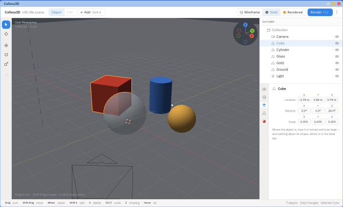

Previous: Cafesa3D tutorial · Contents · Next: Objects
1. The window, and moving around
Cafesa3D opens on a small still life: a red cube, a glass ball, a gold ball and a blue cylinder on the ground, with a lamp and a camera. Keep it open while you read.

Cafesa3D as it opens: the header along the top, the tools down the left, the 3D view in the middle, the Outliner and Properties on the right, and the foot along the bottom.
The parts of the window
The header, along the top
- Cafesa3D and the name of the scene you have open.
- Object and Edit - the two modes. Object mode is where you arrange whole objects; Edit mode, for shaping a mesh point by point, is still to come and is greyed out.
- Add (Shift A) - puts a new object into the scene.
- Wireframe, Solid and Rendered - three ways of looking at the scene: its edges, its surfaces, or the finished picture.
- Render (F12) - takes the picture through the camera, in a window of its own.
- The three dots at the right end - a menu with the sample scenes and this tutorial.
The tools, down the left
- Select - the arrow: click an object to choose it.
- Cursor - click in the view to put the 3D cursor on the ground there. The 3D cursor is the red and white ring: it marks where new objects appear.
- Move, Rotate and Scale - show handles on the chosen object that you drag with the mouse.
The 3D view, in the middle
The scene, seen from wherever you put your eye. The grid is the ground; the red line across it is the X axis and the green line the Y axis, and Z points up. The little ball of axes at the top right always shows which way X, Y and Z are; click one of its axes to look straight down it. At the top left the view says what it is looking from, which object is chosen, and - when it is rendering - how far the picture has got.
The Outliner, top right
Every object in the scene by name. Click a name to choose that object; click its eye to hide it or show it again.
Properties, under the Outliner
Five tabs down its left edge, each about one kind of thing:
- Render - the settings the picture is made with.
- World - the sky.
- Object - where the chosen object is, how it is turned, and how big.
- Data - its shape: a cube's sides, a sphere's radius, a lamp's power.
- Material - what it is made of.
The foot, along the bottom
The keys that matter most right now on the left, and on the right how many objects and triangles the scene has and which object is chosen.
Moving around the scene
Everything here moves your eye, never the objects.
- Drag in the view to turn around the point you are looking at.
- Shift and drag to slide the view sideways and up and down.
- The wheel brings you closer or takes you further away.
- 1 looks from the front, 3 from the right, 7 from the top; hold Shift with one for the back, the left or the bottom.
- Home brings everything into view.
- Z switches between Solid and Wireframe.
Try it now: drag to walk around the still life, roll the wheel to come close to the gold ball, then press Home to see everything again.
Previous: Cafesa3D tutorial · Contents · Next: Objects